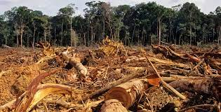

"1)DEFORESTATION"
it refers to the decrease in forest areas across the world that
are lost for other uses such as agricultural croplands,urbanization
or mining activities. greatly accelerated by human activities since
1960,deforestation has been negatively affecting natural ecosystems.

SOIL EROSION